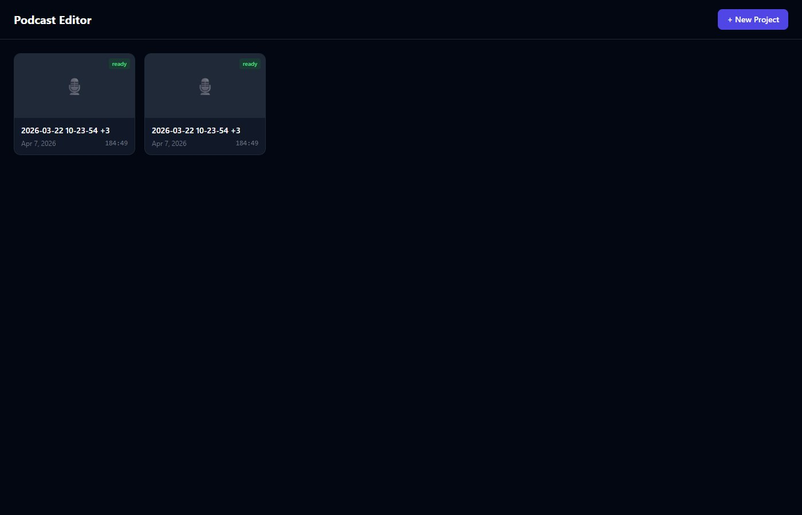

A full-pipeline podcast editing app — upload raw footage, and it handles transcription, cleanup, editing, and export.

The projects dashboard — pick up where you left off or start a new episode.
A web-based podcast editor that takes raw video/audio recordings and runs them through an automated processing pipeline: transcription via Whisper, silence detection, AI-powered content flagging (via Claude), filler word detection, mouth noise cleanup, and noise reduction.
After processing, you get an interactive waveform editor where you can review, approve, or reject each detected issue — then export a polished MP4 or MP3. The whole thing runs locally, no cloud uploads needed.
When you upload files, the backend kicks off a multi-stage pipeline. Each stage runs as a background task with real-time progress updates via WebSocket.
I was recording podcast episodes and the editing workflow was painful — silence trimming, content review, bleeping, and export all required different tools. I wanted one app that could take raw footage and handle the entire pipeline, with AI doing the tedious parts (flagging content, detecting filler words) so I could focus on creative decisions.
The waveform editor is the centerpiece. Each detected issue shows up as a color-coded segment on the timeline — amber for silence, red for AI-flagged content, pink for bleeps. You review each one, approve or reject, adjust the boundaries if needed, and export. The whole flow from raw footage to finished episode happens in one place.